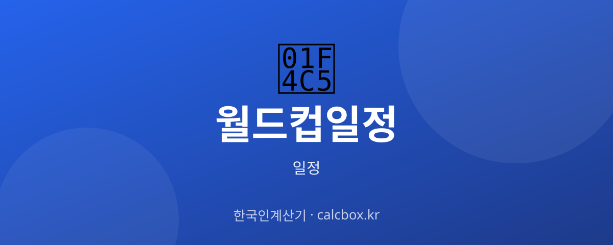

월드컵 일정 개괄 — 대회 구조·기간과 전체 일정 확인하는 법
4년마다 열리는 지구촌 축구 축제 월드컵. 대회가 어떤 단계로 구성되고 전체 일정을 어디서 확인하는지 개괄해 정리했습니다.

FIFA 월드컵 일정, 무엇을 확인하나요?
FIFA 월드컵은 본선에서 조별리그 → 토너먼트(16강·8강·4강) → 결승 순으로 진행됩니다. 대회는 개막전부터 결승까지 약 한 달가량 이어지는 것이 일반적입니다.
확인 핵심은 개막·폐막(결승) 날짜, 조별리그 기간, 토너먼트 라운드 일정, 개최지입니다. 참고로 다가오는 2026 대회는 미국·캐나다·멕시코 공동 개최로 치러집니다.
최신 일정 확인하는 법
가장 공식적인 정보는 FIFA 공식 홈페이지의 대회 일정과 대진표입니다. 전체 매치 스케줄, 개최 도시, 킥오프 시간이 공지됩니다.
빠르게 보려면 포털 스포츠에서 '월드컵'을 검색해 일정·대진표 탭을 확인하면 됩니다. 국내 대표팀 관련 소식은 대한축구협회를 통해 볼 수 있습니다.
- FIFA 공식 홈페이지(대회 일정·대진표)
- 네이버 스포츠 월드컵 일정
- 대한축구협회(KFA) 대표팀 소식
- 중계 방송사(지상파·스포츠 채널)
중계·관람·예매 정보
개최지 시차에 따라 한국에서 볼 수 있는 시간대가 달라집니다. 예컨대 북중미 개최는 한국에서 밤·새벽 경기가 많아질 수 있으니 KST 환산 시간을 확인하세요.
월드컵 본선은 지상파·스포츠 채널에서 폭넓게 중계되는 경우가 많지만, 최종 중계 편성과 온라인 플랫폼은 대회 전 발표됩니다.
알아두면 좋은 포인트
조별리그는 조별로 팀들이 맞붙어 성적순으로 토너먼트 진출 팀을 가리고, 이후는 단판 승부의 토너먼트라 지면 탈락합니다. 라운드가 올라갈수록 경기 간격과 일정이 달라집니다.
특정 국가(예: 한국)의 경기만 보고 싶다면 그 팀의 조별리그 일정을 별도로 확인하고, 결승만 관심 있다면 결승 관련 일정을 따로 챙기는 것이 편합니다.
자주 묻는 질문 (FAQ)
Q. 월드컵은 얼마 동안 열리나요?
개막전부터 결승까지 대체로 약 한 달가량 이어지는 것이 일반적입니다. 조별리그를 먼저 치른 뒤 16강부터 결승까지 토너먼트가 진행됩니다. 정확한 개막·폐막일은 대회별 공식 일정을 확인하세요.
Q. 월드컵 전체 일정은 어디서 보나요?
가장 공식적인 정보는 FIFA 공식 홈페이지의 대회 일정과 대진표로, 전체 매치 스케줄과 개최 도시, 킥오프 시간이 공지됩니다. 빠르게는 포털 스포츠의 월드컵 일정 탭도 편리합니다.
Q. 2026 월드컵은 어디서 열리나요?
2026 FIFA 월드컵은 미국·캐나다·멕시코 3개국이 공동으로 개최합니다. 개최지가 북중미라 한국에서는 경기 상당수가 밤·새벽 시간대에 열릴 가능성이 있어 KST 환산 확인이 필요합니다.